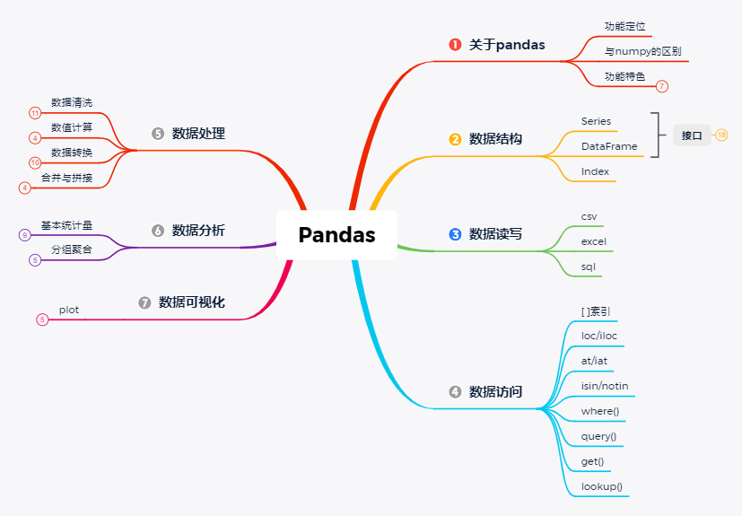

# 1. 导入pandas包
import pandas as pd
# 2. 假设data数据
data = {
"calories": [420, 380, 390],
"duration": [50, 40, 45]
}
# 3. 假设df，然后调用pd(pandas包)，将数据转换为DataFrame格式
df = pd.DataFrame(data)
# 4. 打印df
df| calories | duration | |
|---|---|---|
| 0 | 420 | 50 |
| 1 | 380 | 40 |
| 2 | 390 | 45 |
大家在前面可能已经学习了Python的大概用法，但是那些各种各样的数据该怎么用Python来处理呢？或者说Python跟其他像 Exccel，或者SQL、JAVA、R这些语言，在数据处理方面又有什么不同呢？
首先这个Pandas是Python的一个库，专门用于数据处理和分析。它提供了高性能、灵活和易于使用的数据结构，包括数据导入、清洗、转换、分析和可视化，是非常适用于处理结构化和表格化的数据。Pandas在数据科学、金融分析、商业智能等领域得到广泛应用。对于不同的数据结构下面进行举例（附上相关案例链接）

Pandas最常用于处理表格数据，例如CSV文件、Excel文件、数据库查询结果等。你可以使用Pandas读取这些数据，并对其进行各种操作，如过滤、排序、合并、聚合、计算统计指标等。
当使用Pandas处理表格数据时，你可以使用DataFrame这个主要的数据结构。DataFrame是一个二维的标记数组，类似于电子表格或SQL表。
# 1. 导入pandas包
import pandas as pd
# 2. 假设data数据
data = {
"calories": [420, 380, 390],
"duration": [50, 40, 45]
}
# 3. 假设df，然后调用pd(pandas包)，将数据转换为DataFrame格式
df = pd.DataFrame(data)
# 4. 打印df
df| calories | duration | |
|---|---|---|
| 0 | 420 | 50 |
| 1 | 380 | 40 |
| 2 | 390 | 45 |
Pandas提供了强大的时间序列功能，可以处理日期和时间相关的数据。你可以使用Pandas对时间序列数据进行重采样、滚动计算、时间窗口分析、时间序列绘图等操作。
import pandas as pd
date = pd.to_datetime("13th of June, 2023")
dateTimestamp('2023-06-13 00:00:00')可以使用DateTimeIndex和TimedeltaIndex来表示时间索引和时间间隔。
import pandas as pd
# 创建一个包含日期范围的时间索引
date_range = pd.date_range(start='2023-01-01', end='2023-01-10', freq='D')
# 创建一个DataFrame，并使用时间索引
data = pd.DataFrame({'Value': [10, 20, 30, 40, 50, 60, 70, 80, 90, 100]}, index=date_range)
# 查看数据的前几行
data.head()| Value | |
|---|---|
| 2023-01-01 | 10 |
| 2023-01-02 | 20 |
| 2023-01-03 | 30 |
| 2023-01-04 | 40 |
| 2023-01-05 | 50 |
选取所需的时间序列数据，并进行计算
# 通过日期索引获取某一天的数据
day_data = data.loc['2023-01-05']
# 通过日期范围索引获取一段时间内的数据
range_data = data.loc['2023-01-03':'2023-01-07']
# 使用日期的年、月、日等属性进行切片
year_data = data[data.index.year == 2023]
month_data = data[data.index.month == 1]
day_data = data[data.index.day == 5]
# 将数据按周进行重采样，计算每周的平均值
weekly_data = data.resample('W').mean()
# 将数据按月进行重采样，计算每月的总和
monthly_data = data.resample('M').sum()Pandas提供了灵活的方法来处理缺失数据。你可以使用Pandas来检测和处理缺失值，填充缺失数据，或者根据缺失值进行数据筛选和计算。
# 创建带有缺失数据的DataFrame
data = pd.DataFrame({'A': [1, 2, None, 4, 5],
'B': [None, 2, 3, None, 6],
'C': [1, 2, 3, 4, 5]})检查并统计缺失值
# 检测每个单元格是否为缺失值
missing_values = data.isnull()
# 统计每列的缺失值数量
missing_counts = data.isnull().sum()
# 统计整个DataFrame的缺失值数量
total_missing_count = data.isnull().sum().sum()对缺失值进行操作
# 删除包含缺失值的行
data_dropna = data.dropna()
# 删除全部为缺失值的列
data_dropna_cols = data.dropna(axis=1, how='all')
# 填充缺失值为指定的常数
data_fillna = data.fillna(0)
# 使用缺失值前面的值进行前向填充
data_ffill = data.fillna(method='ffill')
# 使用缺失值后面的值进行后向填充
data_bfill = data.fillna(method='bfill')Pandas可以用于数据清洗和转换的各种操作。你可以使用Pandas对数据进行重塑、合并、分组、变形等，以满足特定的分析需求。
# 创建原始数据
data = pd.DataFrame({'Name': ['John', 'Emily', 'Michael', 'Emma'],
'Age': [25, 30, 35, 28],
'Gender': ['M', 'F', 'M', 'F'],
'Salary': ['$5000', '$6000', '$4500', '$7000']})清洗重复或者多余数据
# 去除重复的行
data_cleaned = data.drop_duplicates()
# 去除列中的空格
data_cleaned['Name'] = data_cleaned['Name'].str.strip()
# 删除缺失值所在的行
data_cleaned = data_cleaned.dropna()将列表转换为系列（Series）
series = pd.Series(list)
import pandas as pd
# 将列表转换为系列
my_list = [1, 2, 3, 4, 5]
series = pd.Series(my_list)
series0 1
1 2
2 3
3 4
4 5
dtype: int64将系列（Series）转换为数据帧（DataFrame）
dataframe = series.to_frame()
# 将系列转换为数据帧
series = pd.Series([1, 2, 3, 4, 5])
dataframe = series.to_frame()
dataframe| 0 | |
|---|---|
| 0 | 1 |
| 1 | 2 |
| 2 | 3 |
| 3 | 4 |
| 4 | 5 |
将数据帧（DataFrame）转换为列表（list）
my_list = df.values.tolist()
# 将数据帧转换为列表
df = pd.DataFrame({'A': [1, 2, 3], 'B': [4, 5, 6]})
my_list = df.values.tolist()
my_list[[1, 4], [2, 5], [3, 6]]数据的清洗和转换是pandas最常使用的功能，之后我们会逐步拆解，进行详细说明
Pandas集成了Matplotlib库，可以通过简单的接口生成各种统计图表和可视化图形，以便更好地理解和呈现数据。
# 创建数据
data = pd.DataFrame({'Month': ['Jan', 'Feb', 'Mar', 'Apr', 'May', 'Jun'],
'Sales': [100, 150, 120, 200, 180, 250],
'Expenses': [80, 90, 100, 85, 95, 110]})
# 折线图
data.plot(x='Month', y='Sales', kind='line')<Axes: xlabel='Month'>
虽然pandas也可以画图，但是还是静态图形，之后我们会详细说明更加简洁和酷炫的可视化库 Plotly库
Pandas还支持数据建模和分析的操作。你可以使用Pandas进行数据建模、特征工程、数据预处理等，然后将数据传递给机器学习库（如Scikit-learn）进行模型训练和预测。网上看到不错的数据预测案例